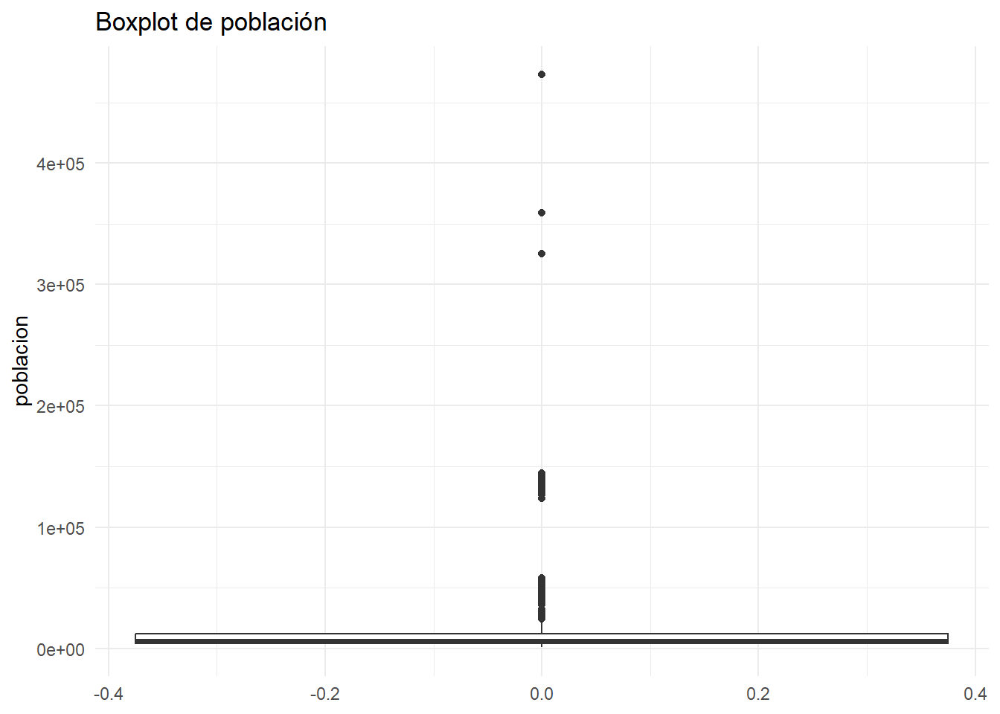
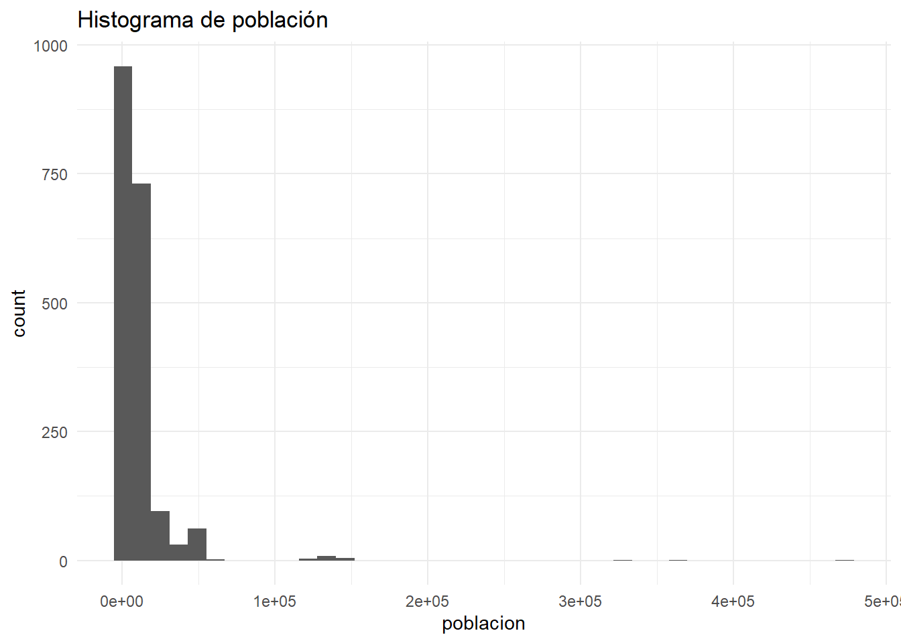
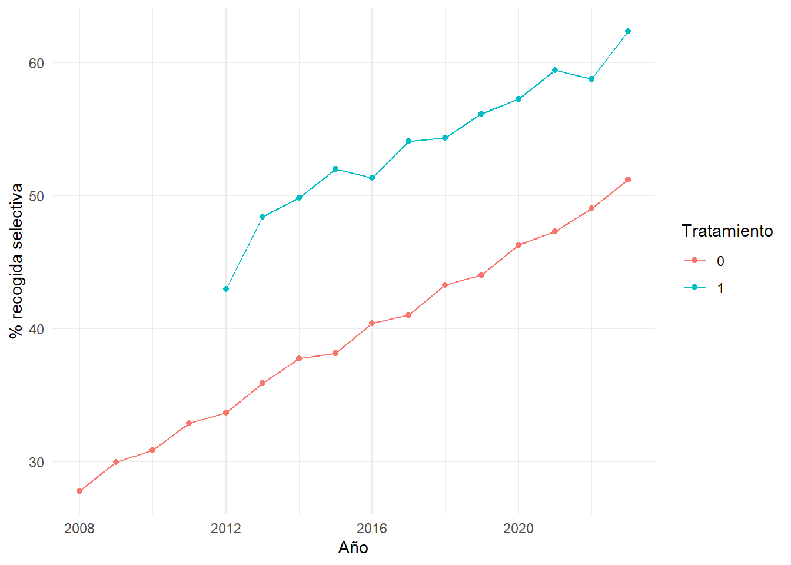
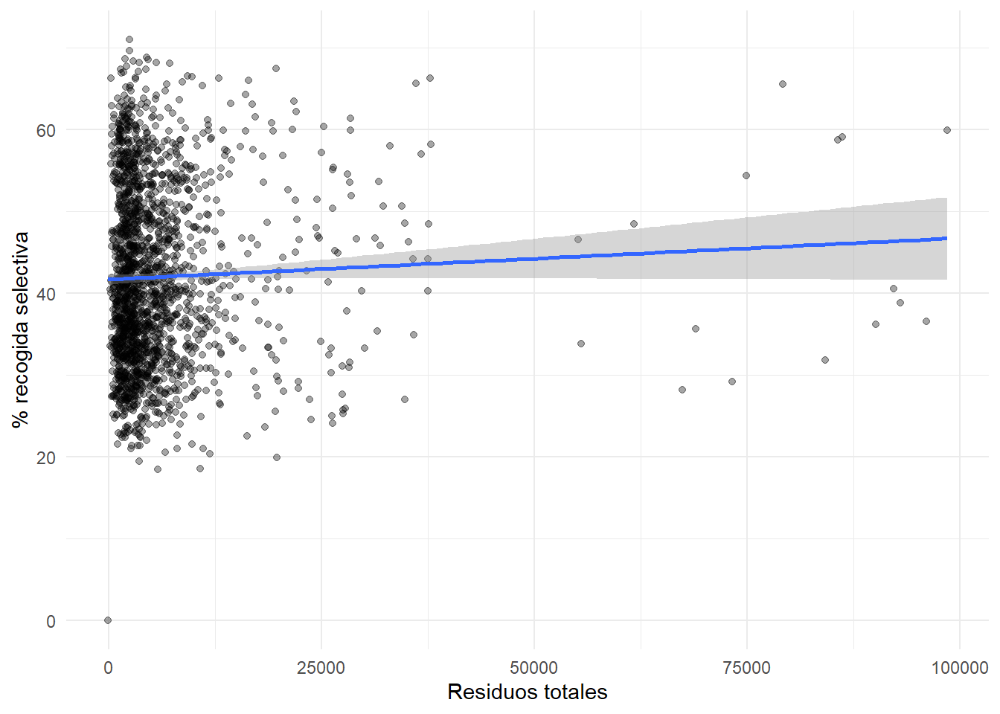
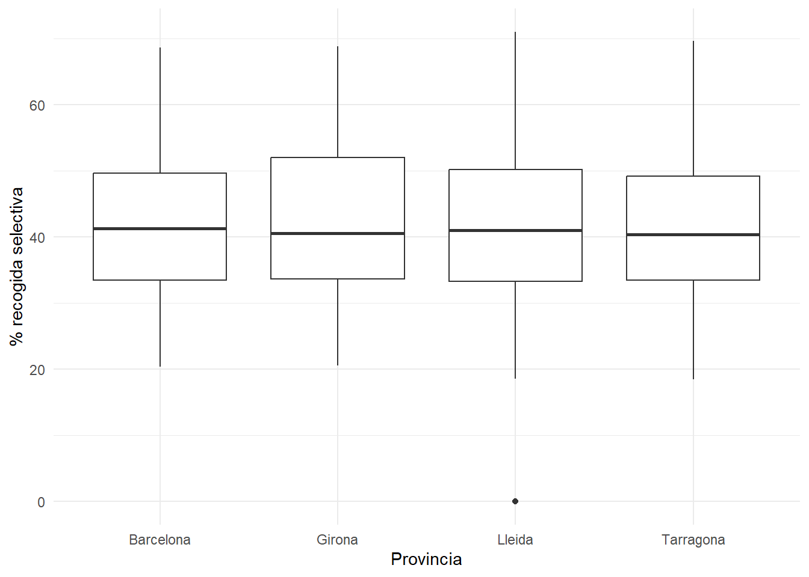

# Instala paquetes si no los tienes:
# install.packages(c("tidyverse", "janitor", "lubridate", "stringr", "readr", "broom", "modelsummary"))
library(tidyverse)
library(janitor)
library(lubridate)
library(stringr)
library(readr)
library(broom)
library(modelsummary)Manual práctico de data wrangling en R
Importación, limpieza, transformación y preparación de datos con tidyverse
1 1. Objetivo del manual
Este manual está pensado como guía práctica de data wrangling en R para ejercicios de evaluación de políticas públicas, bases administrativas y datos municipales.
El objetivo es que puedas:
- leer archivos
.csvcon distintos formatos; - inspeccionar una base;
- limpiar nombres y tipos de variables;
- tratar valores perdidos;
- detectar e imputar outliers;
- manipular strings;
- crear variables;
- fusionar bases;
- agregar información;
- generar tablas y gráficos exploratorios;
- exportar resultados.
Una diferencia importante respecto a una simple chuleta de código es que este manual crea una base sintética después de la sección de lectura de CSV y la reutiliza en todos los ejemplos, para que al renderizar el .qmd los chunks funcionen.
2 2. Paquetes
3 3. Filosofía general del data wrangling
Un flujo razonable de limpieza suele ser:
Importar → inspeccionar → limpiar nombres → revisar tipos → tratar missings/outliers → strings → joins → variables → agregaciones → exportarEn R, un pipeline típico es:
df <- read_csv2("datos.csv") |>
clean_names() |>
mutate(...) |>
filter(...) |>
group_by(...) |>
summarise(...)La regla práctica es:
No empieces un análisis econométrico hasta entender la unidad de observación, los identificadores, los tipos de variables, los duplicados y los valores perdidos.
4 4. Lectura de archivos CSV
Esta sección usa ejemplos con eval=FALSE porque dependen de archivos externos. Después crearemos una base sintética para todos los ejemplos ejecutables.
4.1 4.1. CSV estándar: separador coma y decimal punto
df <- read_csv("datos.csv")read_csv() espera columnas separadas por coma y decimales con punto.
4.2 4.2. CSV europeo: separador punto y coma y decimal coma
Muy habitual en España.
df <- read_csv2("datos.csv")Versión explícita:
df <- read_delim(
file = "datos.csv",
delim = ";", # carácter que separa columnas
locale = locale(decimal_mark = ",") # carácter usado como separador decimal
)Base R:
df <- read.csv2("datos.csv")4.3 4.3. CSV con coma como separador y coma decimal
df <- read_delim(
file = "datos.csv",
delim = ",",
locale = locale(decimal_mark = ",")
)4.4 4.4. CSV con tabuladores
df <- read_tsv("datos.tsv")
df <- read_delim("datos.csv", delim = "\t")4.5 4.5. Problemas de encoding
df <- read_csv2(
file = "datos.csv",
locale = locale(encoding = "UTF-8")
)
df <- read_csv2(
file = "datos.csv",
locale = locale(encoding = "Latin1")
)
guess_encoding("datos.csv")4.6 4.6. Inspeccionar cómo se ha leído el archivo
glimpse(df) # estructura compacta: nombres, tipos y ejemplos
spec(df) # especificación de lectura; funciona bien con objetos leídos por readr
problems(df) # problemas detectados al parsear columnas
head(df) # primeras filas
View(df) # visor de RStudioNota importante:
spec()yproblems()funcionan especialmente bien con objetos creados porreadr, comoread_csv()oread_csv2().- Si una base ha sido creada manualmente o viene de otro paquete,
spec()puede no mostrar información útil o dar error. En ese caso usaglimpse(),summary()ysapply(df, class).
4.7 4.7. Forzar tipos de columna
Es muy importante leer códigos administrativos como texto.
df <- read_csv2(
file = "datos.csv",
col_types = cols(
codigo_municipio = col_character(), # evita perder ceros iniciales como 08019
year = col_integer(),
poblacion = col_double(),
provincia = col_character()
)
)4.8 4.8. Leer todos los CSV de una carpeta
files <- list.files(
path = "datos",
pattern = "\\.csv$",
full.names = TRUE
)
df_all <- files |>
set_names() |>
map_dfr(read_csv2, .id = "archivo")5 5. Crear una base sintética para los ejemplos
A partir de aquí usaremos una base sintética con estructura de municipio-año. Tiene códigos municipales, provincia, población, residuos, tratamiento PaP, strings de fracciones, missing values y outliers.
set.seed(123)
municipios <- tibble(
codigo_municipio = str_pad(as.character(1:120), width = 5, pad = "0"),
municipio = paste("Municipio", 1:120),
provincia_codigo = sample(c("08", "17", "25", "43"), 120, replace = TRUE),
provincia = case_when(
provincia_codigo == "08" ~ "Barcelona",
provincia_codigo == "17" ~ "Girona",
provincia_codigo == "25" ~ "Lleida",
provincia_codigo == "43" ~ "Tarragona"
),
poblacion_base = round(exp(rnorm(120, log(7000), 0.9))),
renta_media = round(rnorm(120, 24000, 4000)),
zona_costera = rbinom(120, 1, 0.35)
)
adopcion <- municipios |>
mutate(
ever_pap = rbinom(n(), 1, 0.45),
anyo_inicio_pap = if_else(
ever_pap == 1,
sample(2012:2020, n(), replace = TRUE),
NA_integer_
)
) |>
select(codigo_municipio, ever_pap, anyo_inicio_pap)
years <- 2008:2023
df <- expand_grid(
codigo_municipio = municipios$codigo_municipio,
year = years
) |>
left_join(municipios, by = "codigo_municipio") |>
left_join(adopcion, by = "codigo_municipio") |>
arrange(codigo_municipio, year) |>
group_by(codigo_municipio) |>
mutate(
tendencia_pob = 1 + 0.006 * (year - min(year)),
poblacion = round(poblacion_base * tendencia_pob + rnorm(n(), 0, poblacion_base * 0.03)),
tratamiento = as.integer(!is.na(anyo_inicio_pap) & year >= anyo_inicio_pap),
rel_time = if_else(tratamiento == 1, year - anyo_inicio_pap, NA_integer_),
residuos_total = poblacion * runif(n(), 0.35, 0.75) + rnorm(n(), 0, 300),
residuos_selectiva = residuos_total * (0.28 + 0.015 * (year - min(year)) + 0.12 * tratamiento + rnorm(n(), 0, 0.04)),
residuos_selectiva = pmax(residuos_selectiva, 0),
pct_selectiva = 100 * residuos_selectiva / residuos_total
) |>
ungroup() |>
mutate(
frac_recogidas_pap = case_when(
tratamiento == 0 ~ NA_character_,
tratamiento == 1 & runif(n()) < 0.40 ~ "Orgánica, Papel y cartón, Envases",
tratamiento == 1 & runif(n()) < 0.65 ~ "Orgánica, Vidrio, Resto",
tratamiento == 1 ~ "Orgánica, Papel y cartón, Vidrio, Envases, Resto"
)
)
set.seed(456)
idx_na_pob <- sample(1:nrow(df), 20)
idx_na_renta <- sample(1:nrow(df), 25)
idx_outlier_pob <- sample(1:nrow(df), 3)
df$poblacion[idx_na_pob] <- NA
df$renta_media[idx_na_renta] <- NA
df$poblacion[idx_outlier_pob] <- df$poblacion[idx_outlier_pob] * 12
df_sucio <- df |>
rename(
`Código Municipio` = codigo_municipio,
`Nombre Municipio` = municipio,
`Año` = year,
`Población Total` = poblacion,
`Residuos Totales (kg)` = residuos_total,
`% Recogida Selectiva` = pct_selectiva
)
glimpse(df)Rows: 1,920
Columns: 18
$ codigo_municipio <chr> "00001", "00001", "00001", "00001", "00001", "00001…
$ year <int> 2008, 2009, 2010, 2011, 2012, 2013, 2014, 2015, 201…
$ municipio <chr> "Municipio 1", "Municipio 1", "Municipio 1", "Munic…
$ provincia_codigo <chr> "25", "25", "25", "25", "25", "25", "25", "25", "25…
$ provincia <chr> "Lleida", "Lleida", "Lleida", "Lleida", "Lleida", "…
$ poblacion_base <dbl> 9851, 9851, 9851, 9851, 9851, 9851, 9851, 9851, 985…
$ renta_media <dbl> 19747, 19747, 19747, 19747, 19747, 19747, 19747, 19…
$ zona_costera <int> 0, 0, 0, 0, 0, 0, 0, 0, 0, 0, 0, 0, 0, 0, 0, 0, 1, …
$ ever_pap <int> 0, 0, 0, 0, 0, 0, 0, 0, 0, 0, 0, 0, 0, 0, 0, 0, 1, …
$ anyo_inicio_pap <int> NA, NA, NA, NA, NA, NA, NA, NA, NA, NA, NA, NA, NA,…
$ tendencia_pob <dbl> 1.000, 1.006, 1.012, 1.018, 1.024, 1.030, 1.036, 1.…
$ poblacion <dbl> 9819, 9704, 9888, 10358, 10250, 10512, 10247, 10386…
$ tratamiento <int> 0, 0, 0, 0, 0, 0, 0, 0, 0, 0, 0, 0, 0, 0, 0, 0, 0, …
$ rel_time <int> NA, NA, NA, NA, NA, NA, NA, NA, NA, NA, NA, NA, NA,…
$ residuos_total <dbl> 6922.148, 5523.676, 5656.232, 4830.428, 4423.598, 4…
$ residuos_selectiva <dbl> 2163.6684, 1825.7703, 1501.4644, 1331.8665, 1313.86…
$ pct_selectiva <dbl> 31.25718, 33.05354, 26.54531, 27.57243, 29.70136, 3…
$ frac_recogidas_pap <chr> NA, NA, NA, NA, NA, NA, NA, NA, NA, NA, NA, NA, NA,…6 6. Limpieza inicial de nombres y estructura
6.1 6.1. Limpiar nombres de columnas
clean_names() viene del paquete janitor. Convierte nombres con espacios, tildes, símbolos o mayúsculas en nombres cómodos para trabajar en R.
names(df_sucio) [1] "Código Municipio" "Año" "Nombre Municipio"
[4] "provincia_codigo" "provincia" "poblacion_base"
[7] "renta_media" "zona_costera" "ever_pap"
[10] "anyo_inicio_pap" "tendencia_pob" "Población Total"
[13] "tratamiento" "rel_time" "Residuos Totales (kg)"
[16] "residuos_selectiva" "% Recogida Selectiva" "frac_recogidas_pap" df_limpio_nombres <- df_sucio |>
clean_names()
names(df_limpio_nombres) [1] "codigo_municipio" "ano"
[3] "nombre_municipio" "provincia_codigo"
[5] "provincia" "poblacion_base"
[7] "renta_media" "zona_costera"
[9] "ever_pap" "anyo_inicio_pap"
[11] "tendencia_pob" "poblacion_total"
[13] "tratamiento" "rel_time"
[15] "residuos_totales_kg" "residuos_selectiva"
[17] "percent_recogida_selectiva" "frac_recogidas_pap" Si clean_names() da error, normalmente es porque no se cargó janitor.
install.packages("janitor")
library(janitor)6.2 6.2. Renombrar variables
df_renombrado <- df |>
rename(
residuos_totales = residuos_total,
porcentaje_selectiva = pct_selectiva
)
names(df_renombrado) |> head()[1] "codigo_municipio" "year" "municipio" "provincia_codigo"
[5] "provincia" "poblacion_base" 6.3 6.3. Seleccionar columnas
df_select <- df |>
select(codigo_municipio, municipio, year, provincia, poblacion, residuos_total)
head(df_select)# A tibble: 6 × 6
codigo_municipio municipio year provincia poblacion residuos_total
<chr> <chr> <int> <chr> <dbl> <dbl>
1 00001 Municipio 1 2008 Lleida 9819 6922.
2 00001 Municipio 1 2009 Lleida 9704 5524.
3 00001 Municipio 1 2010 Lleida 9888 5656.
4 00001 Municipio 1 2011 Lleida 10358 4830.
5 00001 Municipio 1 2012 Lleida 10250 4424.
6 00001 Municipio 1 2013 Lleida 10512 4048.Eliminar columnas:
df_sin_columnas <- df |>
select(-frac_recogidas_pap)
glimpse(df_sin_columnas)Rows: 1,920
Columns: 17
$ codigo_municipio <chr> "00001", "00001", "00001", "00001", "00001", "00001…
$ year <int> 2008, 2009, 2010, 2011, 2012, 2013, 2014, 2015, 201…
$ municipio <chr> "Municipio 1", "Municipio 1", "Municipio 1", "Munic…
$ provincia_codigo <chr> "25", "25", "25", "25", "25", "25", "25", "25", "25…
$ provincia <chr> "Lleida", "Lleida", "Lleida", "Lleida", "Lleida", "…
$ poblacion_base <dbl> 9851, 9851, 9851, 9851, 9851, 9851, 9851, 9851, 985…
$ renta_media <dbl> 19747, 19747, 19747, 19747, 19747, 19747, 19747, 19…
$ zona_costera <int> 0, 0, 0, 0, 0, 0, 0, 0, 0, 0, 0, 0, 0, 0, 0, 0, 1, …
$ ever_pap <int> 0, 0, 0, 0, 0, 0, 0, 0, 0, 0, 0, 0, 0, 0, 0, 0, 1, …
$ anyo_inicio_pap <int> NA, NA, NA, NA, NA, NA, NA, NA, NA, NA, NA, NA, NA,…
$ tendencia_pob <dbl> 1.000, 1.006, 1.012, 1.018, 1.024, 1.030, 1.036, 1.…
$ poblacion <dbl> 9819, 9704, 9888, 10358, 10250, 10512, 10247, 10386…
$ tratamiento <int> 0, 0, 0, 0, 0, 0, 0, 0, 0, 0, 0, 0, 0, 0, 0, 0, 0, …
$ rel_time <int> NA, NA, NA, NA, NA, NA, NA, NA, NA, NA, NA, NA, NA,…
$ residuos_total <dbl> 6922.148, 5523.676, 5656.232, 4830.428, 4423.598, 4…
$ residuos_selectiva <dbl> 2163.6684, 1825.7703, 1501.4644, 1331.8665, 1313.86…
$ pct_selectiva <dbl> 31.25718, 33.05354, 26.54531, 27.57243, 29.70136, 3…Seleccionar por patrón:
df_residuos <- df |>
select(codigo_municipio, year, starts_with("residuos"), contains("selectiva"))
head(df_residuos)# A tibble: 6 × 5
codigo_municipio year residuos_total residuos_selectiva pct_selectiva
<chr> <int> <dbl> <dbl> <dbl>
1 00001 2008 6922. 2164. 31.3
2 00001 2009 5524. 1826. 33.1
3 00001 2010 5656. 1501. 26.5
4 00001 2011 4830. 1332. 27.6
5 00001 2012 4424. 1314. 29.7
6 00001 2013 4048. 1435. 35.46.4 6.4. Reordenar columnas
df_relocate <- df |>
relocate(codigo_municipio, municipio, provincia, year)
head(df_relocate)# A tibble: 6 × 18
codigo_municipio municipio provincia year provincia_codigo poblacion_base
<chr> <chr> <chr> <int> <chr> <dbl>
1 00001 Municipio 1 Lleida 2008 25 9851
2 00001 Municipio 1 Lleida 2009 25 9851
3 00001 Municipio 1 Lleida 2010 25 9851
4 00001 Municipio 1 Lleida 2011 25 9851
5 00001 Municipio 1 Lleida 2012 25 9851
6 00001 Municipio 1 Lleida 2013 25 9851
# ℹ 12 more variables: renta_media <dbl>, zona_costera <int>, ever_pap <int>,
# anyo_inicio_pap <int>, tendencia_pob <dbl>, poblacion <dbl>,
# tratamiento <int>, rel_time <int>, residuos_total <dbl>,
# residuos_selectiva <dbl>, pct_selectiva <dbl>, frac_recogidas_pap <chr>7 7. Inspección rápida de la base
dim(df)[1] 1920 18names(df) [1] "codigo_municipio" "year" "municipio"
[4] "provincia_codigo" "provincia" "poblacion_base"
[7] "renta_media" "zona_costera" "ever_pap"
[10] "anyo_inicio_pap" "tendencia_pob" "poblacion"
[13] "tratamiento" "rel_time" "residuos_total"
[16] "residuos_selectiva" "pct_selectiva" "frac_recogidas_pap"glimpse(df)Rows: 1,920
Columns: 18
$ codigo_municipio <chr> "00001", "00001", "00001", "00001", "00001", "00001…
$ year <int> 2008, 2009, 2010, 2011, 2012, 2013, 2014, 2015, 201…
$ municipio <chr> "Municipio 1", "Municipio 1", "Municipio 1", "Munic…
$ provincia_codigo <chr> "25", "25", "25", "25", "25", "25", "25", "25", "25…
$ provincia <chr> "Lleida", "Lleida", "Lleida", "Lleida", "Lleida", "…
$ poblacion_base <dbl> 9851, 9851, 9851, 9851, 9851, 9851, 9851, 9851, 985…
$ renta_media <dbl> 19747, 19747, 19747, 19747, 19747, 19747, 19747, 19…
$ zona_costera <int> 0, 0, 0, 0, 0, 0, 0, 0, 0, 0, 0, 0, 0, 0, 0, 0, 1, …
$ ever_pap <int> 0, 0, 0, 0, 0, 0, 0, 0, 0, 0, 0, 0, 0, 0, 0, 0, 1, …
$ anyo_inicio_pap <int> NA, NA, NA, NA, NA, NA, NA, NA, NA, NA, NA, NA, NA,…
$ tendencia_pob <dbl> 1.000, 1.006, 1.012, 1.018, 1.024, 1.030, 1.036, 1.…
$ poblacion <dbl> 9819, 9704, 9888, 10358, 10250, 10512, 10247, 10386…
$ tratamiento <int> 0, 0, 0, 0, 0, 0, 0, 0, 0, 0, 0, 0, 0, 0, 0, 0, 0, …
$ rel_time <int> NA, NA, NA, NA, NA, NA, NA, NA, NA, NA, NA, NA, NA,…
$ residuos_total <dbl> 6922.148, 5523.676, 5656.232, 4830.428, 4423.598, 4…
$ residuos_selectiva <dbl> 2163.6684, 1825.7703, 1501.4644, 1331.8665, 1313.86…
$ pct_selectiva <dbl> 31.25718, 33.05354, 26.54531, 27.57243, 29.70136, 3…
$ frac_recogidas_pap <chr> NA, NA, NA, NA, NA, NA, NA, NA, NA, NA, NA, NA, NA,…summary(df$poblacion) Min. 1st Qu. Median Mean 3rd Qu. Max. NA's
844 4061 6794 11570 11817 472944 20 Número de missing por variable:
df |>
summarise(across(everything(), ~ sum(is.na(.))))# A tibble: 1 × 18
codigo_municipio year municipio provincia_codigo provincia poblacion_base
<int> <int> <int> <int> <int> <int>
1 0 0 0 0 0 0
# ℹ 12 more variables: renta_media <int>, zona_costera <int>, ever_pap <int>,
# anyo_inicio_pap <int>, tendencia_pob <int>, poblacion <int>,
# tratamiento <int>, rel_time <int>, residuos_total <int>,
# residuos_selectiva <int>, pct_selectiva <int>, frac_recogidas_pap <int>Valores distintos en variables de texto:
df |>
summarise(across(where(is.character), n_distinct))# A tibble: 1 × 5
codigo_municipio municipio provincia_codigo provincia frac_recogidas_pap
<int> <int> <int> <int> <int>
1 120 120 4 4 4Frecuencias:
df |>
count(provincia, sort = TRUE)# A tibble: 4 × 2
provincia n
<chr> <int>
1 Lleida 528
2 Barcelona 512
3 Girona 512
4 Tarragona 368Frecuencias con porcentaje:
df |>
count(provincia) |>
mutate(pct = 100 * n / sum(n))# A tibble: 4 × 3
provincia n pct
<chr> <int> <dbl>
1 Barcelona 512 26.7
2 Girona 512 26.7
3 Lleida 528 27.5
4 Tarragona 368 19.28 8. Tipos de variables y conversiones
8.1 8.1. Character a numeric
A veces los números vienen como texto, especialmente si hay comas decimales.
df_texto <- tibble(
valor_texto = c("1.234,56", "987,10", "12.500,00")
)
df_texto |>
mutate(
valor_num = parse_number(
valor_texto,
locale = locale(
decimal_mark = ",", # separador decimal
grouping_mark = "." # separador de miles
)
)
)# A tibble: 3 × 2
valor_texto valor_num
<chr> <dbl>
1 1.234,56 1235.
2 987,10 987.
3 12.500,00 12500 8.2 8.2. Numeric a character para códigos
codigos <- tibble(
codigo_num = c(8019, 17001, 25040)
)
codigos |>
mutate(
codigo_chr = as.character(codigo_num),
codigo_pad = str_pad(codigo_chr, width = 5, pad = "0")
)# A tibble: 3 × 3
codigo_num codigo_chr codigo_pad
<dbl> <chr> <chr>
1 8019 8019 08019
2 17001 17001 17001
3 25040 25040 25040 str_pad() añade caracteres a la izquierda o derecha hasta alcanzar una longitud determinada.
8.3 8.3. Character a factor
df_factor <- df |>
mutate(
provincia_factor = factor(provincia)
)
levels(df_factor$provincia_factor)[1] "Barcelona" "Girona" "Lleida" "Tarragona"Ordenar categorías:
df_tamano <- df |>
mutate(
tamano_municipio = case_when(
poblacion < 1000 ~ "pequeno",
poblacion < 10000 ~ "mediano",
poblacion >= 10000 ~ "grande",
TRUE ~ NA_character_
),
tamano_municipio = factor(
tamano_municipio,
levels = c("pequeno", "mediano", "grande")
)
)
count(df_tamano, tamano_municipio)# A tibble: 4 × 2
tamano_municipio n
<fct> <int>
1 pequeno 16
2 mediano 1260
3 grande 624
4 <NA> 208.4 8.4. Fechas
fechas <- tibble(
fecha_texto = c("15/03/2021", "01/12/2020", "30/06/2019")
)
fechas |>
mutate(
fecha = dmy(fecha_texto),
year = year(fecha),
month = month(fecha)
)# A tibble: 3 × 4
fecha_texto fecha year month
<chr> <date> <dbl> <dbl>
1 15/03/2021 2021-03-15 2021 3
2 01/12/2020 2020-12-01 2020 12
3 30/06/2019 2019-06-30 2019 6Funciones habituales:
ymd("2021-03-15")[1] "2021-03-15"dmy("15/03/2021")[1] "2021-03-15"mdy("03/15/2021")[1] "2021-03-15"9 9. Valores perdidos
Los valores perdidos (NA) pueden significar dato no observado, cero real mal codificado, política no aplicable o error de lectura.
9.1 9.1. Detectar missing values
df |>
summarise(across(everything(), ~ sum(is.na(.))))# A tibble: 1 × 18
codigo_municipio year municipio provincia_codigo provincia poblacion_base
<int> <int> <int> <int> <int> <int>
1 0 0 0 0 0 0
# ℹ 12 more variables: renta_media <int>, zona_costera <int>, ever_pap <int>,
# anyo_inicio_pap <int>, tendencia_pob <int>, poblacion <int>,
# tratamiento <int>, rel_time <int>, residuos_total <int>,
# residuos_selectiva <int>, pct_selectiva <int>, frac_recogidas_pap <int>Por filas:
df_missing_filas <- df |>
mutate(n_missing = rowSums(is.na(across(everything()))))
df_missing_filas |>
count(n_missing)# A tibble: 5 × 2
n_missing n
<dbl> <int>
1 0 432
2 1 8
3 2 428
4 3 1029
5 4 239.2 9.2. Filtrar missing
df_sin_na_pob <- df |>
filter(!is.na(poblacion))
nrow(df)[1] 1920nrow(df_sin_na_pob)[1] 19009.3 9.3. Reemplazar missing por un valor fijo
Esto solo tiene sentido si el NA significa realmente ausencia.
df_replace_na <- df |>
mutate(
frac_recogidas_pap = replace_na(frac_recogidas_pap, "sin PaP")
)
count(df_replace_na, frac_recogidas_pap) |> head()# A tibble: 4 × 2
frac_recogidas_pap n
<chr> <int>
1 Orgánica, Papel y cartón, Envases 182
2 Orgánica, Papel y cartón, Vidrio, Envases, Resto 104
3 Orgánica, Vidrio, Resto 155
4 sin PaP 14799.4 9.4. Imputar por media o mediana
La mediana es más robusta a outliers que la media.
mediana_pob <- median(df$poblacion, na.rm = TRUE)
df_imp_mediana <- df |>
mutate(
poblacion_imp = if_else(
is.na(poblacion),
mediana_pob,
poblacion
)
)
sum(is.na(df_imp_mediana$poblacion_imp))[1] 09.5 9.5. Imputar por grupo
df_imp_grupo <- df |>
group_by(provincia, year) |>
mutate(
poblacion_imp = if_else(
is.na(poblacion),
median(poblacion, na.rm = TRUE),
poblacion
)
) |>
ungroup()
sum(is.na(df_imp_grupo$poblacion_imp))[1] 09.6 9.6. Imputar con predicción de un modelo lineal
Si una variable continua tiene missing, puedes predecirla con otras variables observadas. Esto no es causal: es una imputación predictiva.
mod_pob <- lm(
poblacion ~ renta_media + zona_costera + provincia + year,
data = df
)
df_imp_lm <- df |>
mutate(
pred_poblacion = predict(mod_pob, newdata = df),
poblacion_imp_lm = if_else(
is.na(poblacion),
pred_poblacion,
poblacion
)
)
sum(is.na(df_imp_lm$poblacion_imp_lm))[1] 1Si también hay missing en predictores como renta_media, predict() puede devolver NA.
9.7 9.7. Imputar una variable binaria con logit
Si la variable con missing es binaria, una opción es estimar un logit y sustituir los missing por la probabilidad predicha o por una dummy basada en esa probabilidad.
Creamos missing artificiales en zona_costera.
set.seed(999)
df_logit_imp <- df |>
mutate(
zona_costera_miss = zona_costera,
zona_costera_miss = if_else(
row_number() %in% sample(row_number(), 80),
NA_integer_,
zona_costera_miss
)
)
sum(is.na(df_logit_imp$zona_costera_miss))[1] 80Estimamos un logit con observaciones no missing.
mod_logit <- glm(
zona_costera_miss ~ provincia + year + tratamiento + pct_selectiva,
data = df_logit_imp,
family = binomial(link = "logit")
)Predecimos probabilidades e imputamos.
df_logit_imp <- df_logit_imp |>
mutate(
pred_zona_costera = predict(
mod_logit,
newdata = df_logit_imp,
type = "response" # devuelve probabilidades entre 0 y 1
),
zona_costera_imp_prob = if_else(
is.na(zona_costera_miss),
pred_zona_costera,
as.numeric(zona_costera_miss)
),
zona_costera_imp_dummy = if_else(
is.na(zona_costera_miss),
as.integer(pred_zona_costera >= 0.5),
zona_costera_miss
)
)
df_logit_imp |>
summarise(
missing_original = sum(is.na(zona_costera_miss)),
missing_prob = sum(is.na(zona_costera_imp_prob)),
missing_dummy = sum(is.na(zona_costera_imp_dummy))
)# A tibble: 1 × 3
missing_original missing_prob missing_dummy
<int> <int> <int>
1 80 0 0Cuándo usar cada opción:
zona_costera_imp_prob: útil si quieres conservar una probabilidad predicha.zona_costera_imp_dummy: útil si necesitas una variable binaria final.
Advertencias:
- esto no sustituye una estrategia formal de imputación múltiple;
- documenta siempre qué variables usaste para imputar;
- evita usar outcomes post-tratamiento como predictores si luego harás análisis causal.
10 10. Outliers
Un outlier es un valor extremadamente alejado del resto. Puede ser un error o una unidad real excepcional.
10.1 10.1. Inspección visual
ggplot(df, aes(y = poblacion)) +
geom_boxplot() +
labs(title = "Boxplot de población") +
theme_minimal()
ggplot(df, aes(x = poblacion)) +
geom_histogram(bins = 40) +
labs(title = "Histograma de población") +
theme_minimal()
10.2 10.2. Método IQR
El IQR es el rango intercuartílico: Q3 - Q1.
q1 <- quantile(df$poblacion, 0.25, na.rm = TRUE)
q3 <- quantile(df$poblacion, 0.75, na.rm = TRUE)
iqr <- q3 - q1
lim_inf <- q1 - 1.5 * iqr
lim_sup <- q3 + 1.5 * iqr
df_outliers_iqr <- df |>
filter(poblacion < lim_inf | poblacion > lim_sup)
df_outliers_iqr |>
select(codigo_municipio, municipio, year, poblacion) |>
head()# A tibble: 6 × 4
codigo_municipio municipio year poblacion
<chr> <chr> <int> <dbl>
1 00010 Municipio 10 2008 44342
2 00010 Municipio 10 2009 44839
3 00010 Municipio 10 2010 44625
4 00010 Municipio 10 2011 45853
5 00010 Municipio 10 2012 46706
6 00010 Municipio 10 2013 4494110.3 10.3. Método por percentiles
p01 <- quantile(df$poblacion, 0.01, na.rm = TRUE)
p99 <- quantile(df$poblacion, 0.99, na.rm = TRUE)
df |>
filter(poblacion < p01 | poblacion > p99) |>
select(codigo_municipio, municipio, year, poblacion) |>
head()# A tibble: 6 × 4
codigo_municipio municipio year poblacion
<chr> <chr> <int> <dbl>
1 00012 Municipio 12 2008 873
2 00012 Municipio 12 2009 892
3 00012 Municipio 12 2010 844
4 00012 Municipio 12 2011 873
5 00012 Municipio 12 2012 857
6 00012 Municipio 12 2013 88410.4 10.4. Winsorización
La winsorización consiste en limitar los valores extremos a un percentil determinado. No elimina observaciones, sino que reduce la influencia de valores extremos.
Ejemplo: valores menores que p01 se sustituyen por p01; valores mayores que p99 se sustituyen por p99.
df_winsor <- df |>
mutate(
poblacion_w = pmin(
pmax(poblacion, p01), # sube valores menores que p01 hasta p01
p99 # baja valores mayores que p99 hasta p99
)
)
summary(df$poblacion) Min. 1st Qu. Median Mean 3rd Qu. Max. NA's
844 4061 6794 11570 11817 472944 20 summary(df_winsor$poblacion_w) Min. 1st Qu. Median Mean 3rd Qu. Max. NA's
1112 4061 6794 10420 11817 58932 20 10.5 10.5. Imputación de outliers por mediana
mediana_pob <- median(df$poblacion, na.rm = TRUE)
df_outlier_imp <- df |>
mutate(
poblacion_imp_outlier = if_else(
poblacion > p99,
mediana_pob,
poblacion
)
)
summary(df_outlier_imp$poblacion_imp_outlier) Min. 1st Qu. Median Mean 3rd Qu. Max. NA's
844 4061 6788 9897 11486 58281 20 10.6 10.6. Imputación usando años vecinos
En panel, una opción razonable para un outlier puntual es reemplazarlo por la media del año anterior y posterior del mismo municipio.
df_vecinos <- df |>
arrange(codigo_municipio, year) |>
group_by(codigo_municipio) |>
mutate(
poblacion_lag = lag(poblacion),
poblacion_lead = lead(poblacion),
poblacion_imp_vecinos = if_else(
poblacion > p99 & !is.na(poblacion_lag) & !is.na(poblacion_lead),
(poblacion_lag + poblacion_lead) / 2,
poblacion
)
) |>
ungroup()
summary(df_vecinos$poblacion_imp_vecinos) Min. 1st Qu. Median Mean 3rd Qu. Max. NA's
844 4061 6794 11011 11817 141238 20 11 11. Manipulación de strings con stringr
11.1 11.1. Minúsculas, mayúsculas y formato título
df_strings <- df |>
mutate(
municipio_lower = str_to_lower(municipio),
provincia_upper = str_to_upper(provincia),
municipio_title = str_to_title(municipio)
)
df_strings |>
select(municipio, municipio_lower, provincia_upper) |>
head()# A tibble: 6 × 3
municipio municipio_lower provincia_upper
<chr> <chr> <chr>
1 Municipio 1 municipio 1 LLEIDA
2 Municipio 1 municipio 1 LLEIDA
3 Municipio 1 municipio 1 LLEIDA
4 Municipio 1 municipio 1 LLEIDA
5 Municipio 1 municipio 1 LLEIDA
6 Municipio 1 municipio 1 LLEIDA 11.2 11.2. Quitar espacios
texto_espacios <- tibble(
nombre = c(" Barcelona", "Girona ", " Sant Cugat del Vallès ")
)
texto_espacios |>
mutate(
trim = str_trim(nombre), # elimina espacios al inicio y final
squish = str_squish(nombre) # además reduce múltiples espacios internos a uno
)# A tibble: 3 × 3
nombre trim squish
<chr> <chr> <chr>
1 " Barcelona" Barcelona Barcelona
2 "Girona " Girona Girona
3 " Sant Cugat del Vallès " Sant Cugat del Vallès Sant Cugat del Va…11.3 11.3. Detectar patrones
df |>
mutate(
tiene_organica = str_detect(
string = frac_recogidas_pap,
pattern = regex("orgánica|organica", ignore_case = TRUE)
)
) |>
count(tiene_organica)# A tibble: 2 × 2
tiene_organica n
<lgl> <int>
1 TRUE 441
2 NA 147911.4 11.4. Crear dummies desde strings
df_frac <- df |>
mutate(
frac_clean = replace_na(frac_recogidas_pap, ""),
frac_clean = str_to_lower(frac_clean),
frac_clean = str_squish(frac_clean),
frac_clean = chartr("áéíóúÁÉÍÓÚ", "aeiouAEIOU", frac_clean),
pap_organica = as.integer(str_detect(frac_clean, "organica")),
pap_papel = as.integer(str_detect(frac_clean, "papel|paper|carton")),
pap_vidrio = as.integer(str_detect(frac_clean, "vidrio|vidre")),
pap_envases = as.integer(str_detect(frac_clean, "envases|envasos")),
pap_resto = as.integer(str_detect(frac_clean, "resto|resta"))
)
df_frac |>
select(frac_recogidas_pap, pap_organica, pap_papel, pap_vidrio, pap_envases, pap_resto) |>
head(10)# A tibble: 10 × 6
frac_recogidas_pap pap_organica pap_papel pap_vidrio pap_envases pap_resto
<chr> <int> <int> <int> <int> <int>
1 <NA> 0 0 0 0 0
2 <NA> 0 0 0 0 0
3 <NA> 0 0 0 0 0
4 <NA> 0 0 0 0 0
5 <NA> 0 0 0 0 0
6 <NA> 0 0 0 0 0
7 <NA> 0 0 0 0 0
8 <NA> 0 0 0 0 0
9 <NA> 0 0 0 0 0
10 <NA> 0 0 0 0 011.5 11.5. Sustituir caracteres
texto_tildes <- tibble(
municipio = c("L'Hospitalet de Llobregat", "Sant Cugat del Vallès", "Móra d'Ebre")
)
texto_tildes |>
mutate(
municipio_sin_tildes = chartr("áéíóúàèòÁÉÍÓÚÀÈÒ", "aeiouaeoAEIOUAEO", municipio),
municipio_guion = str_replace_all(municipio_sin_tildes, " ", "_")
)# A tibble: 3 × 3
municipio municipio_sin_tildes municipio_guion
<chr> <chr> <chr>
1 L'Hospitalet de Llobregat L'Hospitalet de Llobregat L'Hospitalet_de_Llobregat
2 Sant Cugat del Vallès Sant Cugat del Valles Sant_Cugat_del_Valles
3 Móra d'Ebre Mora d'Ebre Mora_d'Ebre 11.6 11.6. Eliminar caracteres
codigos_sucios <- tibble(
codigo = c("08.019", "17-001", "CP:25040", "43 012")
)
codigos_sucios |>
mutate(
solo_numeros = str_remove_all(codigo, "[^0-9]"),
codigo_5 = str_pad(solo_numeros, width = 5, pad = "0")
)# A tibble: 4 × 3
codigo solo_numeros codigo_5
<chr> <chr> <chr>
1 08.019 08019 08019
2 17-001 17001 17001
3 CP:25040 25040 25040
4 43 012 43012 43012 11.7 11.7. Extraer partes de un string
df |>
mutate(
provincia_desde_codigo = str_sub(codigo_municipio, 1, 2),
ultimos_tres = str_sub(codigo_municipio, -3, -1)
) |>
select(codigo_municipio, provincia_desde_codigo, ultimos_tres) |>
head()# A tibble: 6 × 3
codigo_municipio provincia_desde_codigo ultimos_tres
<chr> <chr> <chr>
1 00001 00 001
2 00001 00 001
3 00001 00 001
4 00001 00 001
5 00001 00 001
6 00001 00 001 Extraer años de texto:
texto_anyos <- tibble(
descripcion = c("Inicio PaP en 2015", "Adopta desde 2020", "Sin información")
)
texto_anyos |>
mutate(
anyo_extraido = str_extract(descripcion, "\\d{4}")
)# A tibble: 3 × 2
descripcion anyo_extraido
<chr> <chr>
1 Inicio PaP en 2015 2015
2 Adopta desde 2020 2020
3 Sin información <NA> 11.8 11.8. Separar columnas
codigo_nombre <- tibble(
codigo_nombre = c("08019 - Barcelona", "17001 - Girona", "43148 - Tarragona")
)
codigo_nombre |>
separate(
col = codigo_nombre,
into = c("codigo", "municipio"),
sep = " - "
)# A tibble: 3 × 2
codigo municipio
<chr> <chr>
1 08019 Barcelona
2 17001 Girona
3 43148 Tarragona11.9 11.9. Unir columnas
df |>
select(codigo_municipio, year) |>
unite(
col = id_municipio_year,
codigo_municipio,
year,
sep = "_",
remove = FALSE
) |>
head()# A tibble: 6 × 3
id_municipio_year codigo_municipio year
<chr> <chr> <int>
1 00001_2008 00001 2008
2 00001_2009 00001 2009
3 00001_2010 00001 2010
4 00001_2011 00001 2011
5 00001_2012 00001 2012
6 00001_2013 00001 201311.10 11.10. Contar ocurrencias
df_frac <- df_frac |>
mutate(
n_fracciones_pap = if_else(
frac_clean == "",
0L,
str_count(frac_clean, ",") + 1L
)
)
df_frac |>
count(n_fracciones_pap)# A tibble: 3 × 2
n_fracciones_pap n
<int> <int>
1 0 1479
2 3 337
3 5 10411.11 11.11. Pasar strings a formato largo
df_fracciones_long <- df |>
filter(!is.na(frac_recogidas_pap)) |>
select(codigo_municipio, year, frac_recogidas_pap) |>
separate_longer_delim(frac_recogidas_pap, delim = ",") |>
mutate(
frac_recogidas_pap = str_squish(frac_recogidas_pap)
)
df_fracciones_long |> head()# A tibble: 6 × 3
codigo_municipio year frac_recogidas_pap
<chr> <int> <chr>
1 00002 2012 Orgánica
2 00002 2012 Vidrio
3 00002 2012 Resto
4 00002 2013 Orgánica
5 00002 2013 Papel y cartón
6 00002 2013 Vidrio 11.12 11.12. Normalizar strings para joins
df_keys <- df |>
mutate(
municipio_key = str_to_lower(municipio),
municipio_key = str_squish(municipio_key),
municipio_key = chartr("áéíóúÁÉÍÓÚ", "aeiouAEIOU", municipio_key),
municipio_key = str_remove(municipio_key, "^el "),
municipio_key = str_remove(municipio_key, "^la ")
)
df_keys |>
select(municipio, municipio_key) |>
distinct() |>
head()# A tibble: 6 × 2
municipio municipio_key
<chr> <chr>
1 Municipio 1 municipio 1
2 Municipio 2 municipio 2
3 Municipio 3 municipio 3
4 Municipio 4 municipio 4
5 Municipio 5 municipio 5
6 Municipio 6 municipio 6 12 12. Crear variables nuevas con mutate
12.1 12.1. Variables binarias
df_vars <- df |>
mutate(
alta_selectiva = as.integer(pct_selectiva >= 50)
)
count(df_vars, alta_selectiva)# A tibble: 2 × 2
alta_selectiva n
<int> <int>
1 0 1439
2 1 48112.2 12.2. Variables categóricas con case_when
df_vars <- df_vars |>
mutate(
tamano_municipio = case_when(
poblacion < 1000 ~ "pequeno",
poblacion < 10000 ~ "mediano",
poblacion >= 10000 ~ "grande",
TRUE ~ NA_character_
)
)
count(df_vars, tamano_municipio)# A tibble: 4 × 2
tamano_municipio n
<chr> <int>
1 grande 624
2 mediano 1260
3 pequeno 16
4 <NA> 2012.3 12.3. Ratios y porcentajes
df_vars <- df_vars |>
mutate(
pct_selectiva_recalculada = if_else(
residuos_total > 0,
100 * residuos_selectiva / residuos_total,
NA_real_
)
)
df_vars |>
select(pct_selectiva, pct_selectiva_recalculada) |>
head()# A tibble: 6 × 2
pct_selectiva pct_selectiva_recalculada
<dbl> <dbl>
1 31.3 31.3
2 33.1 33.1
3 26.5 26.5
4 27.6 27.6
5 29.7 29.7
6 35.4 35.412.4 12.4. Logs
df_vars <- df_vars |>
mutate(
log_residuos = log(residuos_total),
log_residuos_1p = log1p(residuos_total)
)log1p(x) calcula log(1+x) y es útil si hay ceros.
12.5 12.5. Variables lag/lead en panel
df_panel <- df |>
arrange(codigo_municipio, year) |>
group_by(codigo_municipio) |>
mutate(
residuos_lag = lag(residuos_total),
residuos_lead = lead(residuos_total),
crecimiento_residuos = residuos_total - lag(residuos_total)
) |>
ungroup()
df_panel |>
select(codigo_municipio, year, residuos_total, residuos_lag, residuos_lead, crecimiento_residuos) |>
head(10)# A tibble: 10 × 6
codigo_municipio year residuos_total residuos_lag residuos_lead
<chr> <int> <dbl> <dbl> <dbl>
1 00001 2008 6922. NA 5524.
2 00001 2009 5524. 6922. 5656.
3 00001 2010 5656. 5524. 4830.
4 00001 2011 4830. 5656. 4424.
5 00001 2012 4424. 4830. 4048.
6 00001 2013 4048. 4424. 6793.
7 00001 2014 6793. 4048. 7804.
8 00001 2015 7804. 6793. 7189.
9 00001 2016 7189. 7804. 5063.
10 00001 2017 5063. 7189. 4136.
# ℹ 1 more variable: crecimiento_residuos <dbl>12.6 12.6. Primera fecha de tratamiento
df_cohorte <- df |>
group_by(codigo_municipio) |>
mutate(
first_treat_year = if_else(
any(tratamiento == 1, na.rm = TRUE),
min(year[tratamiento == 1], na.rm = TRUE),
0L
),
rel_time = if_else(first_treat_year > 0, year - first_treat_year, NA_integer_)
) |>
ungroup()
df_cohorte |>
count(first_treat_year) |>
arrange(first_treat_year)# A tibble: 10 × 2
first_treat_year n
<dbl> <int>
1 0 1040
2 2012 112
3 2013 80
4 2014 112
5 2015 80
6 2016 112
7 2017 96
8 2018 80
9 2019 112
10 2020 9613 13. Filtrar observaciones
df_2021 <- df |>
filter(year == 2021)
nrow(df_2021)[1] 120df_bg <- df |>
filter(provincia %in% c("Barcelona", "Girona"))
count(df_bg, provincia)# A tibble: 2 × 2
provincia n
<chr> <int>
1 Barcelona 512
2 Girona 512Excluir missing:
df_no_missing_pob <- df |>
filter(!is.na(poblacion))
sum(is.na(df_no_missing_pob$poblacion))[1] 0Filtro por grupo: municipios con todos los años observados.
years_all <- sort(unique(df$year))
df_balanced <- df |>
group_by(codigo_municipio) |>
filter(n_distinct(year) == length(years_all)) |>
ungroup()
n_distinct(df_balanced$codigo_municipio)[1] 12014 14. Ordenar y detectar duplicados
df_ordered <- df |>
arrange(codigo_municipio, year)
head(df_ordered)# A tibble: 6 × 18
codigo_municipio year municipio provincia_codigo provincia poblacion_base
<chr> <int> <chr> <chr> <chr> <dbl>
1 00001 2008 Municipio 1 25 Lleida 9851
2 00001 2009 Municipio 1 25 Lleida 9851
3 00001 2010 Municipio 1 25 Lleida 9851
4 00001 2011 Municipio 1 25 Lleida 9851
5 00001 2012 Municipio 1 25 Lleida 9851
6 00001 2013 Municipio 1 25 Lleida 9851
# ℹ 12 more variables: renta_media <dbl>, zona_costera <int>, ever_pap <int>,
# anyo_inicio_pap <int>, tendencia_pob <dbl>, poblacion <dbl>,
# tratamiento <int>, rel_time <int>, residuos_total <dbl>,
# residuos_selectiva <dbl>, pct_selectiva <dbl>, frac_recogidas_pap <chr>Duplicados por clave:
df |>
count(codigo_municipio, year) |>
filter(n > 1)# A tibble: 0 × 3
# ℹ 3 variables: codigo_municipio <chr>, year <int>, n <int>Crear duplicados artificiales:
df_con_dup <- bind_rows(
df,
df |> slice(1:5)
)
df_con_dup |>
count(codigo_municipio, year) |>
filter(n > 1)# A tibble: 5 × 3
codigo_municipio year n
<chr> <int> <int>
1 00001 2008 2
2 00001 2009 2
3 00001 2010 2
4 00001 2011 2
5 00001 2012 2Eliminar duplicados exactos:
df_sin_dup_exactos <- df_con_dup |>
distinct()
nrow(df_con_dup)[1] 1925nrow(df_sin_dup_exactos)[1] 1920Resolver duplicados por clave:
df_resuelto <- df_con_dup |>
group_by(codigo_municipio, year) |>
summarise(
across(where(is.numeric), ~ mean(.x, na.rm = TRUE)),
across(where(is.character), first),
.groups = "drop"
)
df_resuelto |>
count(codigo_municipio, year) |>
filter(n > 1)# A tibble: 0 × 3
# ℹ 3 variables: codigo_municipio <chr>, year <int>, n <int>15 15. Joins y fusiones de bases
base_residuos <- df |>
select(codigo_municipio, year, residuos_total, residuos_selectiva, pct_selectiva)
base_pap <- df |>
select(codigo_municipio, year, tratamiento, anyo_inicio_pap, frac_recogidas_pap)left_join() conserva todas las filas de la izquierda.
df_join <- base_residuos |>
left_join(base_pap, by = c("codigo_municipio", "year"))
glimpse(df_join)Rows: 1,920
Columns: 8
$ codigo_municipio <chr> "00001", "00001", "00001", "00001", "00001", "00001…
$ year <int> 2008, 2009, 2010, 2011, 2012, 2013, 2014, 2015, 201…
$ residuos_total <dbl> 6922.148, 5523.676, 5656.232, 4830.428, 4423.598, 4…
$ residuos_selectiva <dbl> 2163.6684, 1825.7703, 1501.4644, 1331.8665, 1313.86…
$ pct_selectiva <dbl> 31.25718, 33.05354, 26.54531, 27.57243, 29.70136, 3…
$ tratamiento <int> 0, 0, 0, 0, 0, 0, 0, 0, 0, 0, 0, 0, 0, 0, 0, 0, 0, …
$ anyo_inicio_pap <int> NA, NA, NA, NA, NA, NA, NA, NA, NA, NA, NA, NA, NA,…
$ frac_recogidas_pap <chr> NA, NA, NA, NA, NA, NA, NA, NA, NA, NA, NA, NA, NA,…Otros joins:
inner_join(base_residuos, base_pap, by = c("codigo_municipio", "year"))
full_join(base_residuos, base_pap, by = c("codigo_municipio", "year"))
anti_join(base_residuos, base_pap, by = c("codigo_municipio", "year"))
semi_join(base_residuos, base_pap, by = c("codigo_municipio", "year"))Comprobar claves antes del join:
base_residuos |>
count(codigo_municipio, year) |>
filter(n > 1)# A tibble: 0 × 3
# ℹ 3 variables: codigo_municipio <chr>, year <int>, n <int>base_pap |>
count(codigo_municipio, year) |>
filter(n > 1)# A tibble: 0 × 3
# ℹ 3 variables: codigo_municipio <chr>, year <int>, n <int>Ver qué no cruza:
anti_join(base_residuos, base_pap, by = c("codigo_municipio", "year")) |> head()# A tibble: 0 × 5
# ℹ 5 variables: codigo_municipio <chr>, year <int>, residuos_total <dbl>,
# residuos_selectiva <dbl>, pct_selectiva <dbl>anti_join(base_pap, base_residuos, by = c("codigo_municipio", "year")) |> head()# A tibble: 0 × 5
# ℹ 5 variables: codigo_municipio <chr>, year <int>, tratamiento <int>,
# anyo_inicio_pap <int>, frac_recogidas_pap <chr>16 16. Agregaciones y resúmenes
Resumen por año:
tabla_year <- df |>
group_by(year) |>
summarise(
n_municipios = n_distinct(codigo_municipio),
residuos_total = sum(residuos_total, na.rm = TRUE),
pct_selectiva_media = mean(pct_selectiva, na.rm = TRUE),
.groups = "drop"
)
tabla_year# A tibble: 16 × 4
year n_municipios residuos_total pct_selectiva_media
<int> <int> <dbl> <dbl>
1 2008 120 711578. 27.8
2 2009 120 664763. 30.0
3 2010 120 718332. 30.8
4 2011 120 736074. 32.9
5 2012 120 727994. 34.3
6 2013 120 688532. 37.1
7 2014 120 728992. 39.7
8 2015 120 752257. 40.9
9 2016 120 736674. 43.2
10 2017 120 700112. 45.1
11 2018 120 716816. 47.2
12 2019 120 755112. 49.0
13 2020 120 762326. 51.3
14 2021 120 762530. 52.9
15 2022 120 746524. 53.5
16 2023 120 766688. 56.3Resumen por provincia-año:
tabla_prov_year <- df |>
group_by(provincia, year) |>
summarise(
residuos_total = sum(residuos_total, na.rm = TRUE),
residuos_selectiva = sum(residuos_selectiva, na.rm = TRUE),
pct_selectiva_agregada = 100 * residuos_selectiva / residuos_total,
.groups = "drop"
)
tabla_prov_year |> head()# A tibble: 6 × 5
provincia year residuos_total residuos_selectiva pct_selectiva_agregada
<chr> <int> <dbl> <dbl> <dbl>
1 Barcelona 2008 251076. 73142. 29.1
2 Barcelona 2009 211654. 61699. 29.2
3 Barcelona 2010 239911. 70425. 29.4
4 Barcelona 2011 259812. 88181. 33.9
5 Barcelona 2012 252783. 88045. 34.8
6 Barcelona 2013 223000. 81635. 36.6Contar municipios tratados por año:
df |>
group_by(year) |>
summarise(
n_tratados = n_distinct(codigo_municipio[tratamiento == 1]),
.groups = "drop"
)# A tibble: 16 × 2
year n_tratados
<int> <int>
1 2008 0
2 2009 0
3 2010 0
4 2011 0
5 2012 7
6 2013 12
7 2014 19
8 2015 24
9 2016 31
10 2017 37
11 2018 42
12 2019 49
13 2020 55
14 2021 55
15 2022 55
16 2023 55Nuevas adopciones:
tabla_adopciones <- df |>
arrange(codigo_municipio, year) |>
group_by(codigo_municipio) |>
mutate(
adopta_este_anyo = tratamiento == 1 & lag(tratamiento, default = 0) == 0
) |>
ungroup() |>
group_by(year) |>
summarise(
nuevas_adopciones = sum(adopta_este_anyo, na.rm = TRUE),
.groups = "drop"
)
tabla_adopciones# A tibble: 16 × 2
year nuevas_adopciones
<int> <int>
1 2008 0
2 2009 0
3 2010 0
4 2011 0
5 2012 7
6 2013 5
7 2014 7
8 2015 5
9 2016 7
10 2017 6
11 2018 5
12 2019 7
13 2020 6
14 2021 0
15 2022 0
16 2023 0Municipios nunca tratados:
df |>
group_by(codigo_municipio) |>
summarise(
ever_treated = any(tratamiento == 1, na.rm = TRUE),
.groups = "drop"
) |>
count(ever_treated)# A tibble: 2 × 2
ever_treated n
<lgl> <int>
1 FALSE 65
2 TRUE 5517 17. Pivotar datos: largo y ancho
De ancho a largo:
df_long <- df |>
select(codigo_municipio, year, residuos_total, residuos_selectiva) |>
pivot_longer(
cols = starts_with("residuos_"),
names_to = "tipo_residuo",
values_to = "cantidad"
)
df_long |> head()# A tibble: 6 × 4
codigo_municipio year tipo_residuo cantidad
<chr> <int> <chr> <dbl>
1 00001 2008 residuos_total 6922.
2 00001 2008 residuos_selectiva 2164.
3 00001 2009 residuos_total 5524.
4 00001 2009 residuos_selectiva 1826.
5 00001 2010 residuos_total 5656.
6 00001 2010 residuos_selectiva 1501.De largo a ancho:
df_wide <- df_long |>
pivot_wider(
names_from = tipo_residuo,
values_from = cantidad
)
df_wide |> head()# A tibble: 6 × 4
codigo_municipio year residuos_total residuos_selectiva
<chr> <int> <dbl> <dbl>
1 00001 2008 6922. 2164.
2 00001 2009 5524. 1826.
3 00001 2010 5656. 1501.
4 00001 2011 4830. 1332.
5 00001 2012 4424. 1314.
6 00001 2013 4048. 1435.Tabla año por provincia:
tabla_wide <- df |>
group_by(provincia, year) |>
summarise(
pct_selectiva = mean(pct_selectiva, na.rm = TRUE),
.groups = "drop"
) |>
pivot_wider(
names_from = provincia,
values_from = pct_selectiva
)
tabla_wide |> head()# A tibble: 6 × 5
year Barcelona Girona Lleida Tarragona
<int> <dbl> <dbl> <dbl> <dbl>
1 2008 28.5 28.0 27.0 27.6
2 2009 29.6 30.5 29.8 30.0
3 2010 30.2 31.0 31.0 31.4
4 2011 33.3 32.7 33.2 32.4
5 2012 33.1 35.1 34.0 35.0
6 2013 36.9 35.5 38.9 37.218 18. Visualización exploratoria
Series temporales:
p_trends <- df |>
group_by(year, tratamiento) |>
summarise(
pct_selectiva = mean(pct_selectiva, na.rm = TRUE),
.groups = "drop"
) |>
ggplot(aes(year, pct_selectiva, color = factor(tratamiento))) +
geom_line() +
geom_point() +
labs(
x = "Año",
y = "% recogida selectiva",
color = "Tratamiento"
) +
theme_minimal()
p_trends
Scatter plot:
p_scatter <- ggplot(df, aes(x = residuos_total, y = pct_selectiva)) +
geom_point(alpha = 0.35) +
geom_smooth(method = "lm", se = TRUE) +
labs(
x = "Residuos totales",
y = "% recogida selectiva"
) +
theme_minimal()
p_scatter
Boxplot:
ggplot(df, aes(x = provincia, y = pct_selectiva)) +
geom_boxplot() +
labs(
x = "Provincia",
y = "% recogida selectiva"
) +
theme_minimal()
Histograma:
ggplot(df, aes(x = poblacion)) +
geom_histogram(bins = 40) +
labs(title = "Distribución de población") +
theme_minimal()19 19. Exportar resultados
Exportar CSV:
write_csv2(df, "salidas/base_limpia.csv")
write_csv(df, "salidas/base_limpia.csv")Exportar tablas:
write_csv2(tabla_year, "salidas/tabla_resumen_year.csv")Exportar gráficos:
ggsave(
filename = "salidas/tendencias_pct_selectiva.png",
plot = p_trends,
width = 8,
height = 5,
dpi = 300
)20 20. Mini-pipeline aplicado a residuos municipales
Esta plantilla está escrita para copiar y adaptar a datos reales.
library(tidyverse)
library(janitor)
library(lubridate)
library(stringr)
library(readr)
pap <- read_csv2("PaP.csv") |> clean_names()
residuos <- read_csv2("Estadisticas_residuos.csv") |> clean_names()
pap <- pap |>
mutate(codigo_municipio = str_pad(as.character(codigo_municipio), 5, pad = "0"))
residuos <- residuos |>
mutate(codigo_municipio = str_pad(as.character(codigo_municipio), 5, pad = "0"))
pap |> count(codigo_municipio, year) |> filter(n > 1)
residuos |> count(codigo_municipio, year) |> filter(n > 1)
df <- residuos |>
left_join(pap, by = c("codigo_municipio", "year"))
df <- df |>
mutate(
provincia_codigo = str_sub(codigo_municipio, 1, 2),
provincia = case_when(
provincia_codigo == "08" ~ "Barcelona",
provincia_codigo == "17" ~ "Girona",
provincia_codigo == "25" ~ "Lleida",
provincia_codigo == "43" ~ "Tarragona",
TRUE ~ NA_character_
)
)
df <- df |>
mutate(
frac_recogidas_pap = replace_na(frac_recogidas_pap, ""),
frac_clean = str_to_lower(frac_recogidas_pap),
frac_clean = str_squish(frac_clean),
frac_clean = chartr("áéíóúàèòÁÉÍÓÚÀÈÒ", "aeiouaeoAEIOUAEO", frac_clean),
n_fracciones_pap = if_else(frac_clean == "", 0L, str_count(frac_clean, ",") + 1L),
pap_organica = as.integer(str_detect(frac_clean, "organica|organic|org")),
pap_papel_carton = as.integer(str_detect(frac_clean, "paper|papel|carton")),
pap_vidrio = as.integer(str_detect(frac_clean, "vidre|vidrio")),
pap_envases = as.integer(str_detect(frac_clean, "envas")),
pap_resto = as.integer(str_detect(frac_clean, "resta|resto"))
)
df <- df |>
mutate(
tratamiento = as.integer(!is.na(anyo_inicio_pap) & year >= anyo_inicio_pap)
)
df <- df |>
group_by(codigo_municipio) |>
mutate(
G = if_else(
any(tratamiento == 1, na.rm = TRUE),
min(year[tratamiento == 1], na.rm = TRUE),
0L
),
rel_time = if_else(G > 0, year - G, NA_integer_)
) |>
ungroup()
# write_csv2(df, "salidas/base_limpia.csv")21 21. Checklist final de limpieza
dim(df)[1] 1920 18glimpse(df)Rows: 1,920
Columns: 18
$ codigo_municipio <chr> "00001", "00001", "00001", "00001", "00001", "00001…
$ year <int> 2008, 2009, 2010, 2011, 2012, 2013, 2014, 2015, 201…
$ municipio <chr> "Municipio 1", "Municipio 1", "Municipio 1", "Munic…
$ provincia_codigo <chr> "25", "25", "25", "25", "25", "25", "25", "25", "25…
$ provincia <chr> "Lleida", "Lleida", "Lleida", "Lleida", "Lleida", "…
$ poblacion_base <dbl> 9851, 9851, 9851, 9851, 9851, 9851, 9851, 9851, 985…
$ renta_media <dbl> 19747, 19747, 19747, 19747, 19747, 19747, 19747, 19…
$ zona_costera <int> 0, 0, 0, 0, 0, 0, 0, 0, 0, 0, 0, 0, 0, 0, 0, 0, 1, …
$ ever_pap <int> 0, 0, 0, 0, 0, 0, 0, 0, 0, 0, 0, 0, 0, 0, 0, 0, 1, …
$ anyo_inicio_pap <int> NA, NA, NA, NA, NA, NA, NA, NA, NA, NA, NA, NA, NA,…
$ tendencia_pob <dbl> 1.000, 1.006, 1.012, 1.018, 1.024, 1.030, 1.036, 1.…
$ poblacion <dbl> 9819, 9704, 9888, 10358, 10250, 10512, 10247, 10386…
$ tratamiento <int> 0, 0, 0, 0, 0, 0, 0, 0, 0, 0, 0, 0, 0, 0, 0, 0, 0, …
$ rel_time <int> NA, NA, NA, NA, NA, NA, NA, NA, NA, NA, NA, NA, NA,…
$ residuos_total <dbl> 6922.148, 5523.676, 5656.232, 4830.428, 4423.598, 4…
$ residuos_selectiva <dbl> 2163.6684, 1825.7703, 1501.4644, 1331.8665, 1313.86…
$ pct_selectiva <dbl> 31.25718, 33.05354, 26.54531, 27.57243, 29.70136, 3…
$ frac_recogidas_pap <chr> NA, NA, NA, NA, NA, NA, NA, NA, NA, NA, NA, NA, NA,…df |>
summarise(across(everything(), ~ sum(is.na(.))))# A tibble: 1 × 18
codigo_municipio year municipio provincia_codigo provincia poblacion_base
<int> <int> <int> <int> <int> <int>
1 0 0 0 0 0 0
# ℹ 12 more variables: renta_media <int>, zona_costera <int>, ever_pap <int>,
# anyo_inicio_pap <int>, tendencia_pob <int>, poblacion <int>,
# tratamiento <int>, rel_time <int>, residuos_total <int>,
# residuos_selectiva <int>, pct_selectiva <int>, frac_recogidas_pap <int>df |>
count(codigo_municipio, year) |>
filter(n > 1)# A tibble: 0 × 3
# ℹ 3 variables: codigo_municipio <chr>, year <int>, n <int>range(df$year, na.rm = TRUE)[1] 2008 2023n_distinct(df$codigo_municipio)[1] 120df |>
group_by(year) |>
summarise(n_tratados = n_distinct(codigo_municipio[tratamiento == 1]), .groups = "drop") |>
head()# A tibble: 6 × 2
year n_tratados
<int> <int>
1 2008 0
2 2009 0
3 2010 0
4 2011 0
5 2012 7
6 2013 12df |>
group_by(codigo_municipio) |>
summarise(ever_treated = any(tratamiento == 1), .groups = "drop") |>
count(ever_treated)# A tibble: 2 × 2
ever_treated n
<lgl> <int>
1 FALSE 65
2 TRUE 5522 22. Errores comunes
- Leer códigos administrativos como números y perder ceros iniciales.
- No comprobar duplicados antes de un
join. - Usar
mean()osum()sinna.rm = TRUE. - Confundir missing con cero.
- No limpiar strings antes de crear dummies.
- Calcular medias simples de porcentajes cuando corresponde ratio agregado.
- Contar filas en vez de unidades únicas.
- Crear tratamiento con una fecha mal parseada.
- Usar variables post-tratamiento como covariables en análisis causal.
- Exportar CSV con separador/decimal incorrecto.
- No guardar una base intermedia limpia antes del análisis.
- No documentar imputaciones, winsorizaciones o decisiones de limpieza.
23 23. Plantilla mínima para examen
library(tidyverse)
library(janitor)
library(lubridate)
library(stringr)
library(readr)
pap <- read_csv2("PaP.csv") |> clean_names()
residuos <- read_csv2("Estadisticas_residuos.csv") |> clean_names()
pap <- pap |>
mutate(codigo_municipio = str_pad(as.character(codigo_municipio), 5, pad = "0"))
residuos <- residuos |>
mutate(codigo_municipio = str_pad(as.character(codigo_municipio), 5, pad = "0"))
pap |> count(codigo_municipio, year) |> filter(n > 1)
residuos |> count(codigo_municipio, year) |> filter(n > 1)
df <- residuos |>
left_join(pap, by = c("codigo_municipio", "year"))
df <- df |>
mutate(
provincia_codigo = str_sub(codigo_municipio, 1, 2),
provincia = case_when(
provincia_codigo == "08" ~ "Barcelona",
provincia_codigo == "17" ~ "Girona",
provincia_codigo == "25" ~ "Lleida",
provincia_codigo == "43" ~ "Tarragona",
TRUE ~ NA_character_
)
)
df <- df |>
mutate(
frac_recogidas_pap = replace_na(frac_recogidas_pap, ""),
frac_clean = str_to_lower(frac_recogidas_pap),
frac_clean = str_squish(frac_clean),
frac_clean = chartr("áéíóúàèòÁÉÍÓÚÀÈÒ", "aeiouaeoAEIOUAEO", frac_clean),
n_fracciones_pap = if_else(frac_clean == "", 0L, str_count(frac_clean, ",") + 1L),
pap_organica = as.integer(str_detect(frac_clean, "organica|organic|org")),
pap_papel_carton = as.integer(str_detect(frac_clean, "paper|papel|carton")),
pap_vidrio = as.integer(str_detect(frac_clean, "vidre|vidrio")),
pap_envases = as.integer(str_detect(frac_clean, "envas")),
pap_resto = as.integer(str_detect(frac_clean, "resta|resto"))
)
df <- df |>
mutate(
tratamiento = as.integer(!is.na(anyo_inicio_pap) & year >= anyo_inicio_pap)
)
df <- df |>
group_by(codigo_municipio) |>
mutate(
G = if_else(
any(tratamiento == 1, na.rm = TRUE),
min(year[tratamiento == 1], na.rm = TRUE),
0L
),
rel_time = if_else(G > 0, year - G, NA_integer_)
) |>
ungroup()
# write_csv2(df, "salidas/base_limpia.csv")